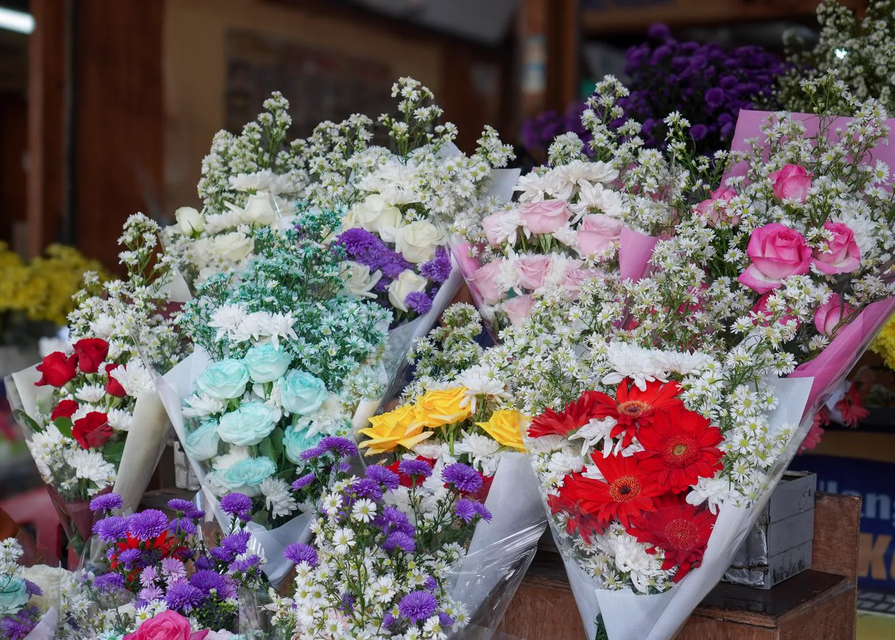
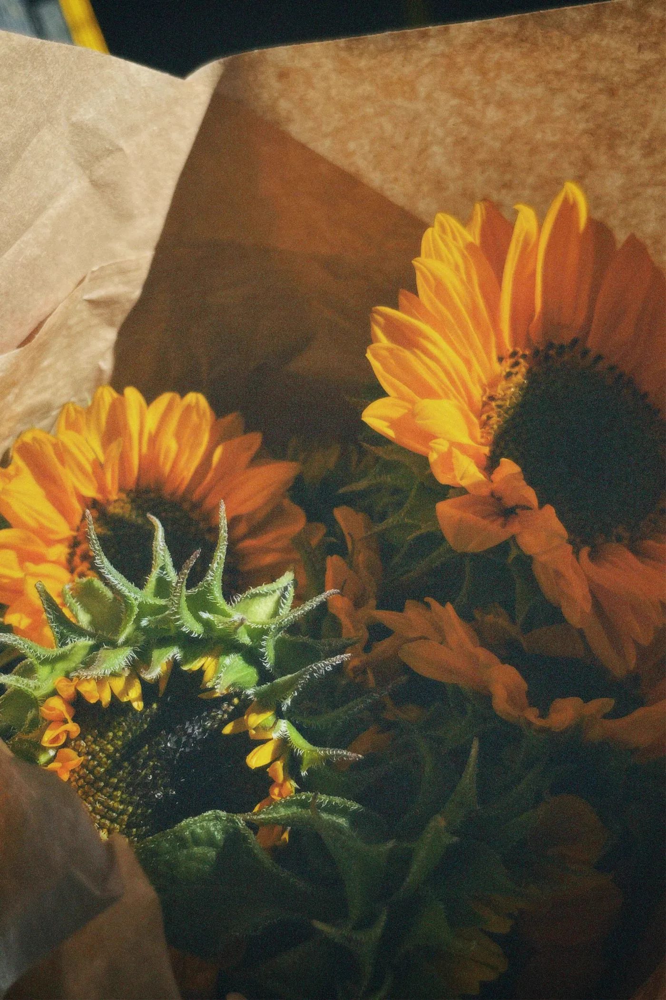
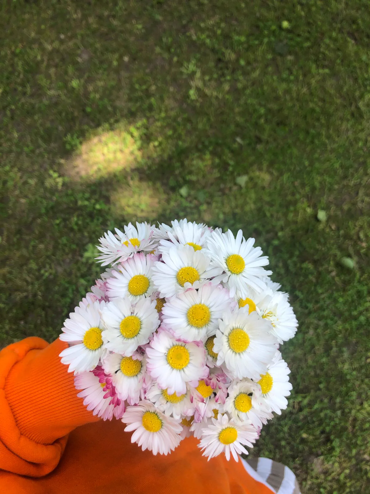

Um clássico do carinho
PARA DIZER EU TE AMO
Um tanto de amor
Rosas, papel delicado e tudo o que não cabe em palavras.
R$ 99,00
Para celebrar, agradecer ou simplesmente lembrar: alguém torna o seu mundo mais bonito.
Um carinho em cada detalhe.
Da escolha das flores ao último laço.

flores queExplore nossa coleção ilustrativa ou use um arranjo como ponto de partida para criar o seu. Todos os preços são de demonstração.
Rosas, papel delicado e tudo o que não cabe em palavras.

Girassóis para levar luz a um novo começo.

Flores do campo em um gesto leve e cheio de afeto.
Uma composição de rosas com acabamento em tecido.
Girassóis em uma versão generosa, com caixa presenteável.
Um encontro de flores do campo para alegrar a rotina.
Nenhum buquê nessa combinação.
Fotos ilustrativas de banco: tamanho, embalagem e quantidade são definidos no resumo, não reproduzidos exatamente nas imagens. Não são produtos disponíveis para compra. Fontes e licença das fotos.
Experimente as combinações. O resumo é montado apenas no seu navegador: não reserva flores, não registra pedidos e não realiza cobranças.
Rosas · Pequeno · Papel natural
A foto representa a família de flores. Tamanho e acabamento são descritos no resumo; a imagem não reproduz exatamente a montagem.
Seu carinho também pode virar palavras.
Não é só sobre flores.
É sobre fazer sentir.
A Flora & Afeto é uma marca fictícia criada para mostrar como uma floricultura pode apresentar sua coleção e ajudar cada pessoa a imaginar um presente especial.
Nesta experiência, as escolhas viram uma composição com resumo claro. Em uma loja real, disponibilidade, substituições, região de entrega e horário precisam ser confirmados pela equipe.
Experimente o montador →Não. Esta é uma demonstração da MOSS Digital, com marca e valores fictícios. Os botões não fazem compras, pagamentos, reservas ou pedidos reais.
O navegador calcula um subtotal ilustrativo e prepara um resumo. Você pode copiá-lo ou baixar um arquivo de texto. Nenhuma composição é salva em servidor ou no armazenamento do navegador.
Não. Após confirmar que entendeu a demonstração, você pode abrir uma conversa com a MOSS Digital para conhecer o modelo de site. O WhatsApp é um serviço externo e a mensagem só é enviada se você confirmar o envio nele.
As fotografias são de banco de imagens e servem como referência, não mostram produtos desta marca fictícia. Espécies, cores, tamanhos, embalagens e substituições de uma floricultura real devem ser alinhados com a equipe conforme a disponibilidade. A foto não muda de tamanho ou acabamento quando você personaliza o resumo.
O lojista precisa definir regiões atendidas, frete, retirada, prazos e horários. Esta demo não consulta CEP, não oferece endereço real e não confirma datas de entrega.
A MOSS Digital pode adaptar este conceito para o seu negócio. Catálogo, integrações e recursos reais são definidos por orçamento.
Quero um site como este ↗